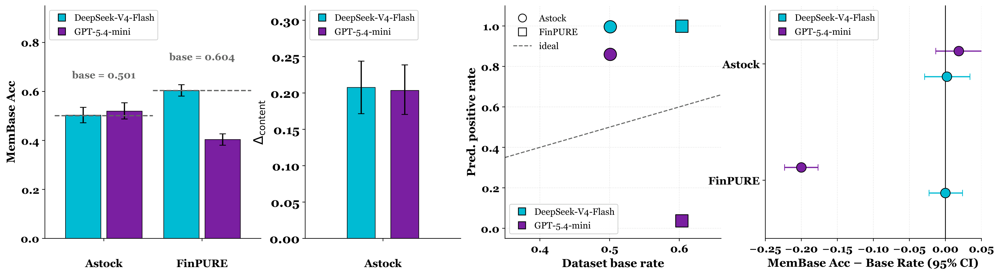
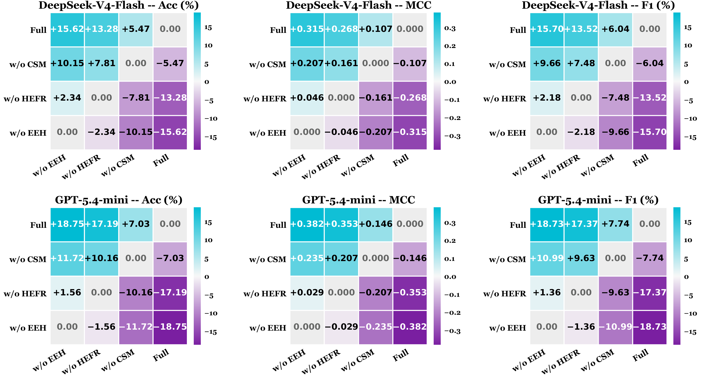
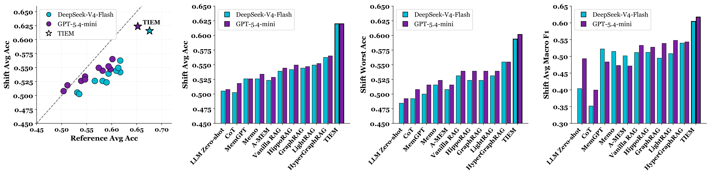
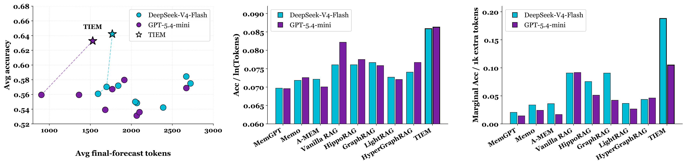
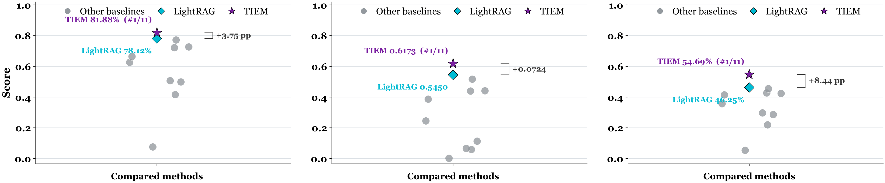

TIEM framework. A catalyst query is anchored by its target stock, catalyst type, and decision time. EEH retrieves temporally valid evidence, HEFR builds the reasoning context, and CSM supplies reusable causal skills.

Why TIEM? Direct prompting can rely on unsupported recall, memory augmentation may introduce hindsight, and conventional RAG can retrieve temporally invalid documents. TIEM jointly reasons over structured evidence and experience.

Benchmark and protocol. Evaluation spans Astock, FinPURE, CMIN-US, EDT, and CSMD, with a Name–Date Probe and the three-gate Contamination Inspection Protocol for auditing shortcut and contamination risks.

Forecasting task. Given a catalyst and only the evidence available by decision time T, the system predicts the direction of the realized return over the benchmark-specific horizon.

Name–Date Probe. Results from the contamination-oriented probe used to examine whether forecasting models exploit memorized event–outcome associations.

Ablation study. Component-level comparisons quantify the contribution of temporal evidence retrieval, evidence–experience fusion, and causal skill memory.

Out-of-distribution evaluation. TIEM is evaluated across cross-market, cross-setting, and temporal distribution shifts.

Efficiency analysis. A comparison of forecasting performance and computational cost across methods and experimental settings.

Macro leaderboard. Aggregate performance across the event-driven financial forecasting benchmarks.
Abstract
Event-driven catalyst-outcome forecasting increasingly uses retrieval- and memory-augmented large language model agents for prediction. However, training-data contamination and temporal leakage can create an Evidence Chasm between reported accuracy and true predictive ability. We propose TIEM, a timestamp-gated framework with three coordinated components: an Event-Evidence Hypergraph (EEH) for timestamp-filtered multi-tier retrieval; a Case-based Skill Memory (CSM) for source-tagged temporal skills; and Heterogeneous Evidence-Experience Fusion Reasoning (HEFR) for evidence-experience fusion and prediction. We also introduce FinPURE, a recent-period A-share holdout benchmark, and use a Name-Date Probe to assess per-model name-date sensitivity rather than assuming training cutoffs. Results on five financial forecasting benchmarks show TIEM outperforms current baselines.
Paper
BibTeX
@misc{liu2026tiem,
title = {TIEM: Temporal Integration of Hypergraph Evidence and Skill Memory for Event-Driven Financial Forecasting},
author = {Wenjin Liu and Shen Pang and Tiesunlong Shen and Zhe Cui and Xiaobao Wu and Anh Tuan Luu and Haoran Luo},
year = {2026},
url = {https://github.com/QwenQKing/Fin_TIEM}
}